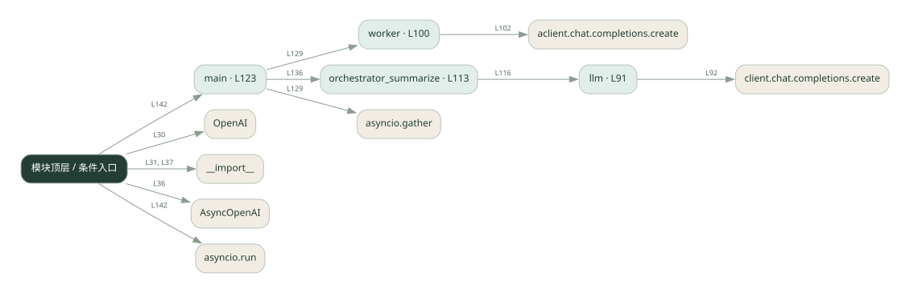

2-1 · 全课程第 21 节
调度者与执行者
020_zhangdi.py
源码快照 5cdcc46dfa9f · 静态解析 · 2026-09-10
01 / 要完成的事
调度者拆任务，执行者分头处理，最后汇总。
02 / 为什么要做
不同子任务有不同目标，把职责分开便于控制。
03 / 当前代码状态
把调度模式用于多维度的岗位/公司比较，使用 AsyncOpenAI 和异步 worker。维度优先级属于这个应用的输入约束，模型分析不等于已核实的现实信息。
存在外部服务或模型依赖；执行前需按源文件配置依赖和凭据，可能联网或产生 API 费用。 本次只做静态解析，没有运行练习，也没有替你填写或修改原代码。
04 / 调用图
打开大图 ↗实线：源码中的直接调用；虚线：函数引用/注册、动态调用或按方法名推断的候选。L 是调用所在源码行号。箭头不表示执行顺序或每次必经；分支、循环、异步调度及框架内部调用需结合源码。灰色是外部/未解析目标，橙色是动态分发；省略 print、len 和常规容器操作以减少干扰。孤立函数可能尚未接入。

先从 main 及模块入口 出发，沿箭头找到本文件函数，再查看外部调用或动态分发。右侧调用清单保留所有静态调用点，能回到原文件逐行对照。
05 / 函数定位
| 函数 / 定义行 | 职责（源码注释） | 内部调用 |
|---|---|---|
llmL91 | 以源码函数体为准；下列调用展示其依赖。 | client.chat.completions.create, resp.choices[动态键].message.content.strip |
workerL100 | worker（异步）：按权重规则评估单个企业，输出「定级 + 理由」 | aclient.chat.completions.create, resp.choices[动态键].message.content.strip |
orchestrator_summarizeL113 | orchestrator：汇总所有 worker 的定级，按权重排序出最终总表 | 动态对象.join, llm |
mainL123 | 以源码函数体为准；下列调用展示其依赖。 | print, asyncio.gather, worker, enumerate, orchestrator_summarize |
这样做的优点
拆解和汇总各自清楚，便于替换某个执行者。
代价与局限
调度者可能成为瓶颈，拆错任务会影响全链路。
适用场景
能分解为几个专业子任务的报告或分析。
不宜直接照搬
简单请求，或子任务之间需要密集交互却没有共享机制。
动手检验理解
让一个执行者只返回部分信息，检查汇总是否说明缺失。
有未实现位置时先预测，再补齐验证。能启动不等于逻辑正确。
查看全部 23 个静态调用 / 引用点
| 调用方 | 目标 | 源码行 | 类型 |
|---|---|---|---|
| <模块入口> | OpenAI | 30 | 调用 |
| <模块入口> | __import__ | 31 | 调用 |
| <模块入口> | AsyncOpenAI | 36 | 调用 |
| <模块入口> | __import__ | 37 | 调用 |
| llm | client.chat.completions.create | 92 | 调用 |
| llm | resp.choices[动态键].message.content.strip | 97 | 调用 |
| worker | aclient.chat.completions.create | 102 | 调用 |
| worker | resp.choices[动态键].message.content.strip | 110 | 调用 |
| orchestrator_summarize | 动态对象.join | 115 | 调用 |
| orchestrator_summarize | llm | 116 | 调用 |
| main | print | 124 | 调用 |
| main | print | 125 | 调用 |
| main | print | 126 | 调用 |
| main | asyncio.gather | 129 | 调用 |
| main | worker | 129 | 调用 |
| main | print | 131 | 调用 |
| main | enumerate | 132 | 调用 |
| main | print | 133 | 调用 |
| main | orchestrator_summarize | 136 | 调用 |
| main | print | 137 | 调用 |
| main | print | 138 | 调用 |
| <模块入口> | asyncio.run | 142 | 调用 |
| <模块入口> | main | 142 | 调用 |